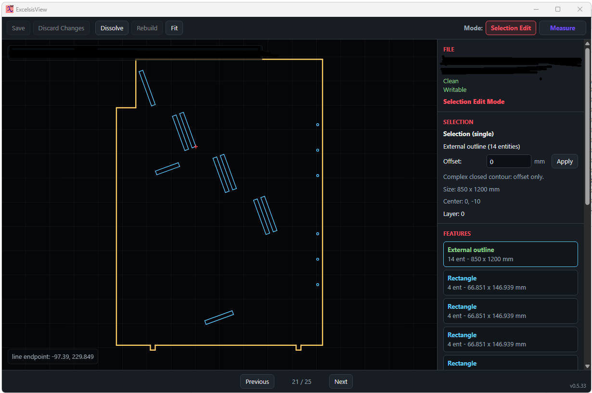
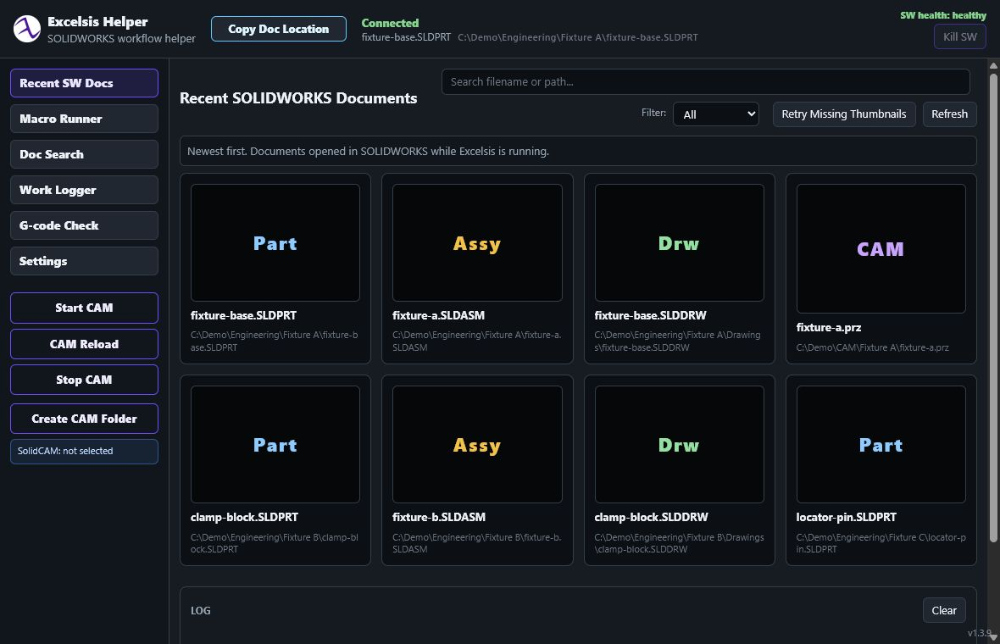

Open and hackable
The direction begins with familiar sketch, extrude, cut, fillet, and constraint workflows on an open geometry stack.

Open-source · local-first · Windows
One desktop viewer for DXF, DWG, regular PDF, and supported 3D PDF documents, with document parsing kept local and risky native work isolated from the application UI.
Support open releases, format testing, and security review work.
Support the workRelease gate
A public installer and source release will appear here only after licensing, corresponding-source, packaged-byte, dependency, security, and privacy checks pass against the exact candidate.
Until then, this page intentionally offers no unaudited download.
CAD and PDF in one application
ExcelsisView combines DXF workflows, DWG conversion, regular PDF tools, supported 3D PDF viewing, and read-only thumbnail machinery in one Windows application.
Security boundary
Native DWG and 3D-document parsing is designed to run in a zero-capability Windows AppContainer with process, time, memory, input, and output limits. Renderer sandboxing, ASAR integrity, native-file integrity checks, and blocked network permissions add defense in depth.
Each public release is expected to include the complete corresponding application source, exact third-party source and notices, installer checksums, and a candid statement of signing and scan status.

Excelsis3D plans · dev help wanted
The longer-term goal is an open CAD workflow in which images, prompts, dimensions, thread sizes, bounding boxes, and other constraints can become editable parametric features—without hiding the engineering model behind a black box.
The direction begins with familiar sketch, extrude, cut, fillet, and constraint workflows on an open geometry stack.
Persistent engineering references are kept distinct from visible evaluated topology so model intent can survive more feature changes.
CAD developers, UI contributors, security reviewers, file-format testers, technical writers, manufacturing users, and AI-coding experimenters are welcome. Planned directions include assemblies, CAM, FEM, semantic feature graphs, and AI-assisted modeling.
Support and development
Report reproducible problems, propose documentation improvements, contribute code, or help test representative non-confidential files. Please do not upload confidential customer or CAD documents to public issues.